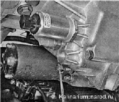

Соленоид блокировки передачи заднего хода - проверка и замена
Для выполнения работы потребуются:
— смотровая канава или эстакада;
— мультиметр.
Проверка
1. Подготавливаем автомобиль к выполнению работы.
2. Снимаем брызговик двигателя или защиту картера двигателя (если установлен).
3. Отсоединяем колодку проводов от соленоида.
4. Вольтметром проверяем напряжение на выводе 1 колодки (к которому подходит красный провод). При включенном зажигании на выводе должно быть напряжение около 12В. Если напряжение не поступает или оно меньше 10 В, проверяем предохранитель F21 цепи соленоида.
5. Омметром измеряем электрическое сопротивление катушки соленоида, которое должно быть около 13 Ом.
6. Если сопротивление соленоида в норме, подаем на его выводы напряжение 12 В от аккумуляторной батареи. При этом должен быть слышен характерный щелчок. Неисправный соленоид заменяем.
Если проверка не выявила неисправности, а блокировка не отключается, следует проверить выключатель передачи блокировки заднего хода . Если выключатель исправен, следует вывернуть соленоид из коробки (см. ниже) и убедиться, что при подаче напряжения 12 В на его выводы, сердечник соленоида втягивается полностью.
Совет
Если в пути перестала выключаться блокировка передачи заднего хода, можно отвернуть соленоид на 8— 10 мм. Плотно намотайте на видимую часть резьбы соленоида изоляционную ленту. Обжимая эту ленту, заверните на несколько оборотов соленоид, так, чтобы между фланцем соленоида и картером коробки передач было расстояние 6-7мм. Добираясь до места стоянки или ремонта, соблюдайте осторожность — при включении первой передачи возможно ошибочное включение передачи заднего хода.
Снятие
1. Сливаем масло из коробки передач.
2. Накидным ключом на 36 мм ослабляем затяжку соленоида.
3. Если такого ключа нет, накидным ключом на 13 мм отворачиваем пробку фиксатора вилки включения передачи заднего хода (она мешает отворачивать соленоид).
4. Вынимаем пружину фиксатора.
5. Чтобы не потерять, магнитной указкой извлекаем шарик фиксатора.
6. Раздвижными пассатижами и рожковым ключом на 36 мм ослабляем затяжку соленоида.
7. Выворачиваем соленоид картера коробки передач.
Установка
Устанавливаем новый соленоид в обратной последовательности, предварительно нанеся на его резьбовую часть герметик и удалив подтеки масла с картера коробки передач.